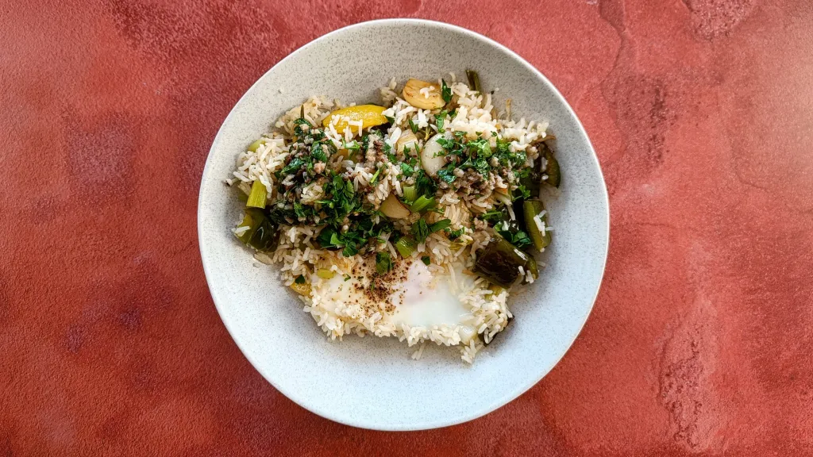
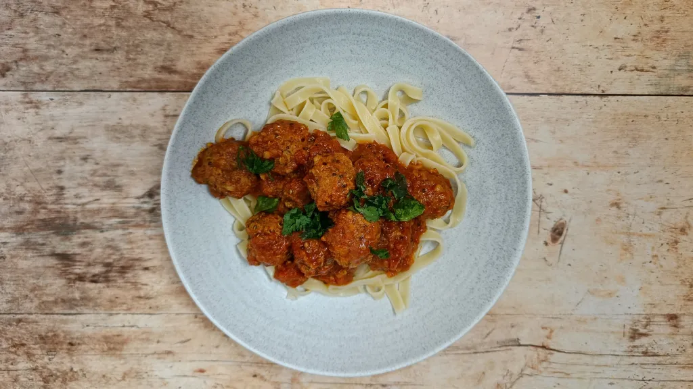
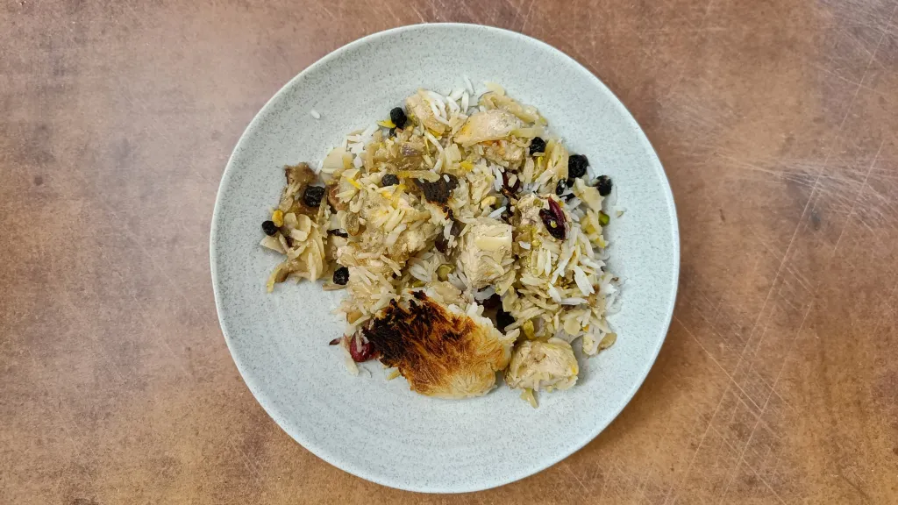

Most recent recipes
Mediterranean style fried rice with anchovy dressing
45 mins
Serves 2

Spicy bulgur wheat meatballs in garlicky tomato sauce
1 hr 25 mins
Serves 6-8

Chickenberry rice
2 hr
Serves 6

Nuoc cham tuna
45 mins
Serves 2

Gyoza sauce
10 mins
Yields 175 ml

Spicy vinegar
10 mins
Yields 150 ml

Beef and pineapple burgers
30 mins
Serves 4

Lemon basil shortbread
35 mins
Serves 24

Red kidney bean & sweet potato stew with yogurt & hot mint oil
1 hr
Serves 4-6

All-in-one nigella-spiced whole tomato dhal
40 mins
Serves 4